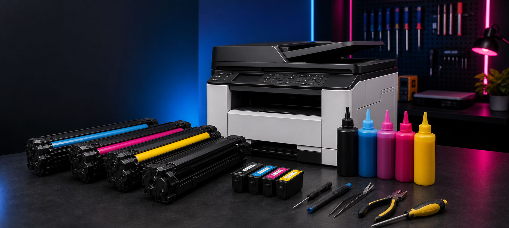

Manutenção
Reparo técnico e manutenção preventiva para evitar paradas.
Trindade, Goiás
Manutenção, limpeza, peças, recarga e toner para impressoras de empresas e residências.
Serviços ISPROTEC
Atendimento técnico, suprimentos e peças para manter sua rotina imprimindo sem dor de cabeça.

Especialistas em impressão
Diagnóstico claro, orçamento organizado e acompanhamento da OS pelo portal do cliente.
Reparo técnico e manutenção preventiva para evitar paradas.
Limpeza interna, calibração e revisão do equipamento.
Reposição de componentes e acessórios para diversas marcas.
Recarga e suporte para cartuchos e sistemas de tinta.
Venda e troca de toners para manter sua operação ativa.
Reparo, instalação, revisão e orientação para uso diário.
Recarga, troca e solução para falhas de impressão.
Venda, substituição e suporte para impressoras laser.
Abastecimento e manutenção para tanques de tinta.
Portal do cliente
Informe o número da OS e o telefone cadastrado para consultar o andamento.
Agendamento online
Envie os dados do equipamento e a melhor data. A equipe da ISPROTEC confirma o atendimento pelo WhatsApp.
Falar no WhatsAppOnde estamos
Segunda a sexta, das 8h às 18h
Ver no Google MapsEnvie uma mensagem no WhatsApp para tirar dúvidas, combinar retirada ou confirmar atendimento.
Chamar no WhatsApp Ver rotas no Google